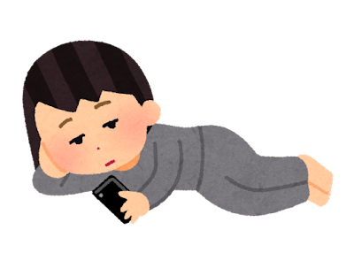
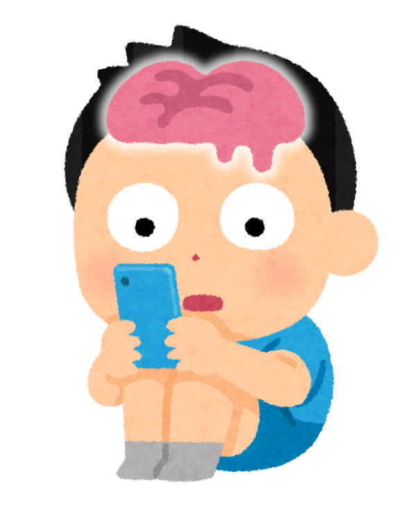
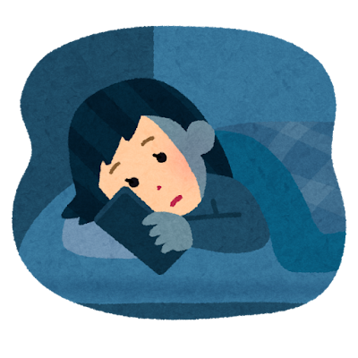
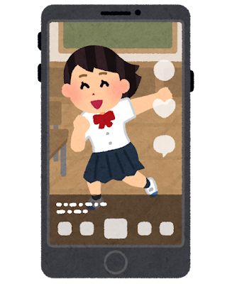
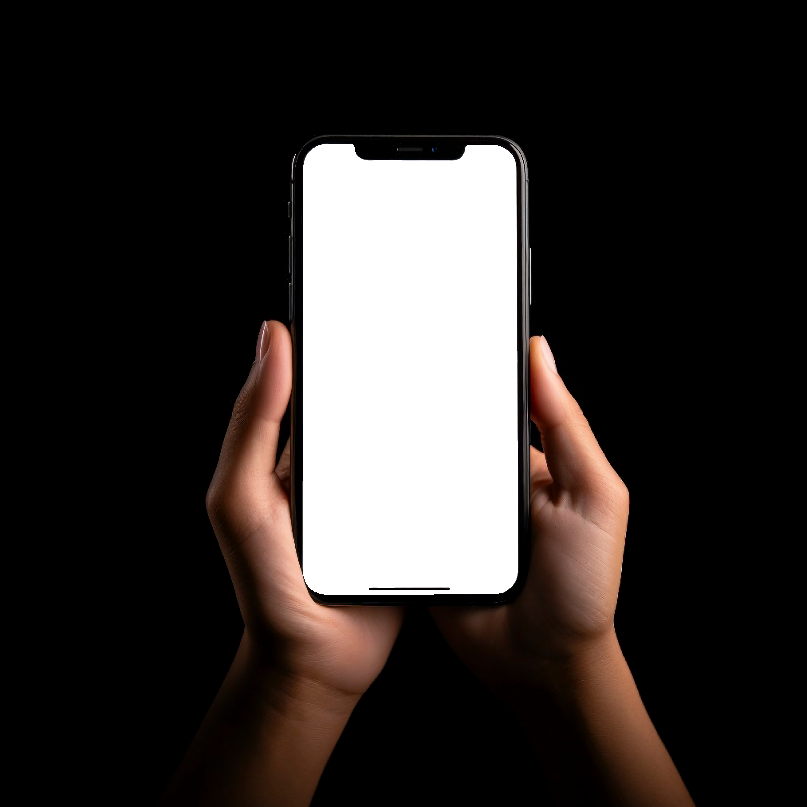
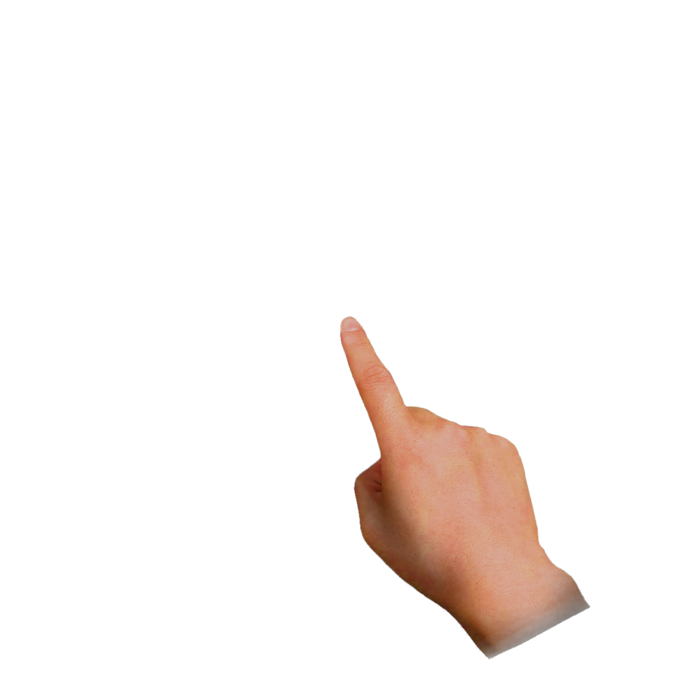

@dopagakiフォロー
[11:00] 朝起きてすぐスマホ
目が覚めたら、まずスマホをチェック。
ドパガキは、ショート動画やゲームなどの刺激の強いコンテンツに慣れて、
常に強い刺激を求めるようになり、集中力が続かなくなる若年層を揶揄するインターネットスラングである。
「ドーパミン中毒のガキ」の略称である。
※「wikipedia」より引用


目が覚めたら、まずスマホをチェック。
動画を見ていたら、いつの間にか寝落ち。

昼寝したせいで眠れない。結局またスマホを見る夜。
2024年12月
Mrs. GREEN APPLEの楽曲『ライラック』に触れ、「ドーパミン中毒のガキ相手の商売って大変だなって思いました」と皮肉った投稿が注目を集めました。
2025年3月～10月
2025年前半はX上でも月数十件程度しか使われないごく小さな言葉でした。
2025年10月、大手事務所のVTuberの配信切り抜き動画のタイトルに「ドパガキ」が使われました。
2026年2月～8月
2026年2月に「ドパガキ」をテーマにした短編漫画が話題になりました。
2026年8月には月間30万件を超える投稿規模に達しました。
2026年上半期には、Simejiの上半期トレンドやガジェット通信のネット流行語大賞にランクイン。
自分はドパガキに対して「ドーパミン」という言葉にイメージされるカラフルで動きの激しいものではなく、脳をハックされ、思考力を奪われるような、
イメージを持っています。
特にショート動画を見ていると勝手に次の動画を見てしまうんです。

まるで誰かに
操作されている
ように。

